컴퓨터응용가공산업기사 (2005-03-06 기출문제)
1과목: 기계가공법 및 안전관리
1. 절삭공구재료로 사용하는 스텔라이트의 주성분은?
- W - C - Co - Cr - Fe
- W - C - Cu - Fe
- Co - Mo - C - Fe
- Co - C - W - Cu - Fe
(정답률: 60%)

2. 버니어 캘리퍼스의 버니어 눈금 방법에서 어미자 19㎜를 20등분할 때 최소 읽기의 값은?
- 0.02 ㎜
- 0.03 ㎜
- 0.04 ㎜
- 0.⑤ ㎜
(정답률: 68%)
3. 강철을 NaCN과 KCN을 주성분으로 하여 표면경화하는 방법은?
- 질화법
- 피막법
- 청화법
- 화염경화법
(정답률: 40%)
4. 지름 50㎜인 연강 둥근 봉을 20m/min의 절삭 속도로 선삭할 때, 스핀들의 회전수는?
- 100.1 rpm
- 127.3 rpm
- 440.2 rpm
- 500.5 rpm
(정답률: 86%)
5. 드릴링의 조건으로 절삭속도 30m/min, 드릴지름 20mm, 이송 0.1mm/rev, 드릴끝 원추의 높이 5.8mm이라 하고 깊이 90mm의 구멍을 절삭하는 데 소요되는 시간은?
- 1.5 min
- 2.0 min
- 3.0 min
- 3.5 min
(정답률: 46%)
6. 연삭숫돌에 다음과 같은 기호가 표기되어 있다. 연삭숫돌 입자의 재질은?
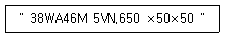
- 백색알루미나
- 녹색탄화규소
- 흑자색탄화규소
- 다이어몬드
(정답률: 83%)
7. 프레스 작업에서 스프링 백(spring back)의 설명으로서 틀린 것은?
- 탄성 한도 및 강도가 클수록 스프링 백의 양은 커진다.
- 다이의 어깨나비가 작을수록 스프링 백의 양이 커진다.
- 동일 두께의 판에서 굽힘 각도가 예리할수록 스프링 백의 양은 커진다.
- 동일 재료인 경우, 굽힘 반경이 작을 수록 스프링 백의 양은 커진다.
(정답률: 54%)
8. 길이 측정기가 아닌 것은?
- 하이트게이지
- 마이크로미터
- 버니어캘리퍼스
- 컴비네이션 스퀘어
(정답률: 64%)
9. 도가니로의 규격 표시법은 무엇인가?
- 1회에 용해할 수 있는 구리의 중량으로 표시
- 1시간에 용해할 수 있는 최대량으로 표시
- 1일에 용해할 수 있는 최대량으로 표시
- 1KW로 용해할 수 있는 알루미늄의 중량으로 표시
(정답률: 42%)
10. 형단조(型鍛造)에서 플래쉬(flash)의 주된 역할로 맞는 것은?
- 단형을 보호한다.
- 단형 내부의 재료를 부족하게 한다.
- 단형에서 남은 재료가 밀려 나가게 한다.
- 단형 내부의 압력을 낮춘다.
(정답률: 45%)
11. 단조용 드롭 해머(drop hammer)의 종류가 아닌 것은?
- 링(ring) 드롭 해머
- 로우프(rope) 드롭 해머
- 판(板) 드롭 해머
- 벨트(belt) 드롭 해머
(정답률: 28%)
12. 목형 제작에서 주물자(shrinkage scale)를 사용하는 이유는?
- 주형을 만들 때 흙이 줄기 때문에
- 쇳물이 굳을 때 줄기 때문에
- 주형을 뽑을 때 움직이기 때문에
- 나무가 줄기 때문에
(정답률: 53%)
13. 산소병을 취급할 때 주의사항으로 틀린 것은?
- 밸브 등에 기름을 주유하여 사용한다.
- 충격을 주지 않는다.
- 밸브의 개폐는 천천히 한다.
- 직사광선에 노출시키지 않는다.
(정답률: 77%)
14. 가스용접시 역화(back fire)의 원인 중 틀린 것은?
- 혼합가스의 연소속도가 분출속도보다 낮을 때
- 팁의 구멍이 불결할 때
- 팁의 구멍이 확대 변형되었을 때
- 작업 중 불꽃이 역행할 때
(정답률: 40%)
15. 파텐팅(patenting) 열처리를 옳게 나타낸 것은?
- 냉간 가공전에 시행하는 항온 변태 처리이다.
- 냉간 가공후에 시행하는 계단 담금질이다.
- 펄라이트 조직을 안정화 시키는 처리이다.
- 미세한 오스테나이트 조직을 주는 처리이다.
(정답률: 49%)
16. 가공경화(work hardening)현상이란?
- 소성변형에 대하여 경도가 감소하는 현상이다.
- 소성변형에 대하여 저항이 증가하는 현상이다.
- 입자들 사이에 슬립이 생기는 현상이다.
- 결정격자가 변화하는 현상이다.
(정답률: 35%)
17. 소성가공에서 열간가공과 냉간가공을 구분하는 온도는?
- 금속이 녹는 온도
- 변태점 온도
- 발광 온도
- 재결정 온도
(정답률: 80%)
18. ø20H7g6로 끼워 맞추었다면 끼워맞춤의 종류는?
- 헐거운 끼워맞춤 이다.
- 중간 끼워맞춤 이다.
- 억지 끼워맞춤 이다.
- 억지 중간 끼워맞춤 이다.
(정답률: 65%)
19. 가공물을 양극으로 하고 불용해성인 납, 구리를 음극으로 하여 전해액 속에 넣으면 가공물의 표면이 전기에 의한 화학작용으로, 매끈한 면을 얻을 수 있는 방법은?
- 전기화학가공
- 전해연마
- 방전가공
- 화학연마
(정답률: 85%)
20. 진직도의 측정에 사용되는 측정기가 아닌 것은?
- 직선자(straight edge)
- 수준기(level)
- 스냅 게이지(snap gauge)
- 오토콜리메이터(auto collimator)
(정답률: 21%)
2과목: 기계설계 및 기계재료
21. 크랭크 축과 같이 복잡하고 큰 재료의 표면을 경화시키는데 가장 많이 사용하는 열처리 방법은?
- 침탄법
- 불꽃경화법
- 질화법
- 청화법
(정답률: 30%)
22. 알루미늄의 용도로서 적당하지 않는 것은?
- 드로잉 재료
- 다이캐스팅 재료
- 자동차 구조용 재료
- 절삭날 재료
(정답률: 63%)
23. 다음 중 다이스강(dies steel)의 특징이 아닌 것은?
- 고온경도가 낮다.
- 경도가 높아 내마모성이 좋다.
- 풀림처리 상태에서 가공성이 양호하다.
- 담금질에 의한 변형이 적다.
(정답률: 54%)
24. 저융점 합금(Fusible alloy)의 설명 중 옳지 않은 것은?
- 포정계 합금
- 로즈합금, 뉴톤합금
- 주성분은 Pb, Sn, Cd
- 전기휴즈, 안전벨브등에 사용
(정답률: 33%)
25. 서멧(cermet)의 특성이 아닌 것은?
- 세라믹과 금속의 특성을 가진다.
- 세라믹과 금속을 결합시킨 소결 복합체이다.
- 고온에서 불안정하며 내열성이 나쁘다.
- 산화물계 서멧에 사용되는 재질은 Al2O3나 BeO 등이다.
(정답률: 47%)
26. 구리의 특성이 아닌 것은?
- 가공성 용이
- 연성 양호
- 내식성 양호
- 접합성 불량
(정답률: 73%)
27. 염소를 함유한 물을 쓰는 수관에서 주로 발생하는 현상으로서 불순물 또는 부식성 물질이 녹아 있는 수용액의 작용에 의해 황동의 표면 또는 깊은 곳까지 나타나는 현상은?
- 탈아연 부식
- 자연균열
- 경년변화
- 풀림경화
(정답률: 55%)
28. 강과 주철은 어느 것을 기준으로 하여 구분하는가?
- 첨가 금속함유량
- 탄소함유량
- 금속조직 상태
- 열처리상태
(정답률: 75%)
29. 풀림의 목적이 아닌 것은?
- 강의 경도를 저하시켜 연하게 한다.
- 경도를 증가시킨다.
- 조직을 균질하게 한다.
- 내부응력을 제거시킨다.
(정답률: 46%)
30. 피절삭성이 양호하여 고속절삭에 적합한 강은?
- 레일강
- 스프링강
- 쾌삭강
- 외륜강
(정답률: 86%)
31. 긴장측 장력 Tt가 이완측 장력 Ts의 2배인 경우 긴장측 장력을 160㎏f라 할 때 유효 장력은 몇 ㎏f인가? (단, 원심력의 영향은 무시한다.)
- 80
- 90
- 160
- 320
(정답률: 37%)
32. 레이디얼 저널베어링에 작용하는 압력 P를 구하는 식은? (단, W : 베어링하중, d : 저널의 지름, ℓ: 저널의 길이이다.)
- P = (dℓ)/W
- P = W/(dℓ)
- P = d/(Wℓ)
- P = W/(d2ℓ)
(정답률: 50%)
33. 하중 3ton이 걸리는 압축코일 스프링의 변형량이 10㎜일 때 스프링 상수는 몇 ㎏f/㎜인가?
- 300
- 1/300
- 100
- 1/100
(정답률: 50%)
34. V 벨트의 각도는 몇 도가 기준인가?
- 40°
- 43°
- 44°
- 46°
(정답률: 79%)
35. 핀 전체가 두 갈래로 되어있어 너트의 풀림 방지나 핀이 빠져 나오지 않게 하는데 사용되는 핀은?
- 테이퍼핀
- 너클핀
- 분할핀
- 평행핀
(정답률: 64%)
36. 모듈(module) 2, 피치원지름 60mm인 표준 스퍼어 기어의 잇수는?
- 30
- 40
- 50
- 60
(정답률: 74%)
37. 미끄럼 베어링의 볼 베어링에 대한 비교 중 틀린 것은?
- 내충격성이 크다.
- 소음이 크다.
- 고온에 약하다.
- 교환성이 나쁘다.
(정답률: 43%)
38. 체결용 나사가 자립상태(自立狀態)를 유지하고 있을 경우 나사의 효율은 몇 % 이하인가?
- 50
- 60
- 70
- 80
(정답률: 38%)
39. 지름 20mm, 피치 2mm인 2줄 나사를 10회전 시켰더니 완전하게 체결되었다. 이 나사의 리드(lead)는 몇 mm인가?
- 20
- 40
- 4
- 2
(정답률: 45%)
40. 성크키이의 폭, 높이, 길이가 각각 12(mm), 8(mm), 140(mm)일 때 키이의 접선력(kgf)은 얼마인가? (단, 허용전단응력 800kgf/cm2 이다.)
- 1344
- 1544
- 13440
- 15440
(정답률: 30%)
3과목: 컴퓨터응용가공
41.
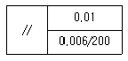
로 표시된 것의 뜻은?- 소정의 길이 200mm에 대하여 0.006mm, 전체길이에 대하여 0.01mm의 대칭도
- 소정의 길이 200mm에 대하여 0.006mm, 전체길이에 대하여 0.01mm의 평행도
- 소정의 길이 200mm에 대하여 0.006mm, 전체길이에 대하여 0.01mm의 직각도
- 소정의 길이 200mm에 대하여 0.006mm, 전체길이에 대하여 0.01mm의 평면도
(정답률: 74%)
42. IGES 데이터 형식과 관계없는 것은?
- start section
- global section
- local section
- terminate section
(정답률: 48%)
43. 다음 등각 투상도에서 화살표 방향을 정면도로 할 경우 좌측면도는 어느 것인가?
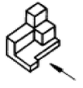
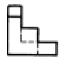
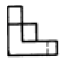
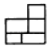
(정답률: 82%)
44. 투상도의 선택방법 중 틀린 것은?
- 주투상도에는 대상물의 모양, 기능을 가장 명확하게 표현하는 면을 그린다.
- 주투상도를 보충하는 다른 투상도는 되도록 적게하고 주투상도만으로 표시할 수 있는 것에 대하여는 다른 투상도는 그리지 않는다.
- 주투상도는 어떻게 놓더라도 괜찮다.
- 서로 관련되는 그림의 배치는 되도록 숨은선을 쓰지 않도록 한다.
(정답률: 65%)
45. 겹판스프링 제도시 무하중 상태를 나타내는 선의 종류는?
- 가는 실선
- 가는 파선
- 가상선
- 파단선
(정답률: 39%)
46. 다음의 형상 기하공차의 기호 중 진원도를 나타낸 것은?
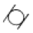
(정답률: 59%)
47. 점 P(3,5)를 원점을 중심으로 90°회전시킬 때 회전한 점의 좌표는? (단, 반시계 방향을 양(+)의 각으로 한다.)
- (3 ,-5)
- (-5, 3)
- (-3, 5)
- (5, -3)
(정답률: 27%)
48. 도면에 나타난 그림의 크기가 치수와 비례하지 않을 때 표시하는 방법 중 틀린 것은?
- 치수밑에 밑줄을 긋는다.
- 비례가 아님으로 표시한다.
- NS 로 기입한다.
- 치수를 ( ) 안에 넣는다.
(정답률: 46%)
49. 3차원변환을 위한 동차좌표계의 변환행렬은 4x4 행렬로 표현되며 보기와 같이 4개의 소행렬로 분할 할 수 있다. 이 중 좌상단의 3×3 소행렬에서 수행되는 역할이 아닌 것은?
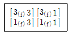
- 크기(scaling)
- 이동(translation)
- 회전(rotation)
- 전단(shearing)
(정답률: 38%)
50. 회전형 가변저항기를 X축과 Y축 방향으로 회전시켜 커서를 이동시키는 기구로 정확한 위치 선택이 용이하며, 주로 키보드와 같이 부착되어 있는 입력장치는?
- 섬휠(thumb wheel)
- 라이트 펜(light pen)
- 디지타이져(digitizer)
- 푸시 버튼(push button)
(정답률: 36%)
51. 다음 도면 중 꿩로 표시된 대각선은 무엇을 뜻하는가?
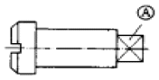
- 이 부분은 타원형이다.
- 이 부분은 열처리 부분이다.
- 이 부분은 아주 정밀하게 가공하여야 한다.
- 이 부분은 평면이다.
(정답률: 77%)
52. x2+y2+z2-4x+6y-10z+2=0인 방정식으로 표현되는 구의 중심점과 반지름은 얼마인가?
- 중심(-2, 3, -5), 반지름 : 6
- 중심(2, -3, 5), 반지름 : 6
- 중심(-4, 6, -10), 반지름: 2
- 중심(4, -6, 10), 반지름: 2
(정답률: 34%)
53. 다음 중에서 옳지 않은 설명은?
- 부품의 모서리 부분을 각이 지도록 깍아내는 것을 모따기(CHAMFERING)라고 한다.
- 치수기입시 원호가 180°가 못되는 것은 반지름으로 표시한다.
- 호의 길이를 표시하는 치수선은 그 호와 같은 중심의 원호로 표시한다.
- 치수기입할 때 기록해야하는 숫자가 많은 경우 3자리마다 콤마(,)를 찍어야 한다.
(정답률: 56%)
54. 스퍼 기어를 제도 할 때 이끝원 및 피치원을 보통 무슨 선으로 표시 하는가?
- 굵은 실선, 가는 1점 쇄선
- 굵은 실선, 가는 2점 쇄선
- 가는 실선, 가는 1점 쇄선
- 가는 실선, 가는 2점 쇄선
(정답률: 49%)
55. 다음 그림과 같이 x2+y2-2=0인 원이 있다. 점 P(1,1)에서의 접선의 방정식은?
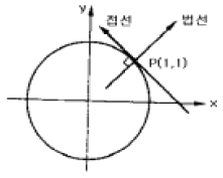
- 2(x-1)+2(y-1)=0
- (x-1)-(y-1)=0
- 2(x+1)+2(y-1)=0
- (x+1)+(y+1)=0
(정답률: 45%)
56. 21인치 1600x1200 픽셀 해상도 래스터모니터를 지원하는 그래픽보드가 트루칼라(24비트)를 지원하기 위해 필요한 최소 메모리는 얼마인가?
- 1 MB
- 4 MB
- 8 MB
- 32 MB
(정답률: 50%)
57. 다음 중 입력장치가 아닌 것은?
- 라이트 펜
- 마우스
- 프린터
- 스캐너
(정답률: 64%)
58. 나사의 종류를 표시하는 기호 중 미터사다리꼴 나사의 표시기호는 어느 것인가?
- M
- PT
- Tr
- UNC
(정답률: 84%)
59. 다음은 모델링과 연관된 용어에 관한 설명이다. 잘못된 것은?
- 스위핑(Sweeping) : 하나의 2차원 단면형상을 입력하고 이를 안내곡선을 따라 이동시켜 입체를 생성
- 스키닝(Skinning) : 여러 개의 단면형상을 입력하고 이를 덮어 싸는 입체를 생성
- 리프팅(Lifting) : 주어진 물체의 특정면의 전부 또는 일부를 원하는 방향으로 움직여서 물체가 그 방향으로 늘어난 효과를 갖도록 하는 것
- 블랜딩(Blending) : 주어진 형상을 국부적으로 변화시키는 방법으로 접하는 곡면을 예리한 모서리로 처리하는 방법
(정답률: 54%)
60. 다음은 솔리드 모델의 데이터 저장 구조인 분해 모델의 하나인 복셀(Voxel) 모델에 관한 설명으로 잘못된 것은?
- 사용하는 복셀의 크기 및 해상도에 따라 용량의 차이가 심하게 나타난다.
- 복셀 모델을 저장하기 위한 데이터 구조로 3차원 배열을 사용한다.
- 어떠한 형상이건 정확한 형상으로 표현이 가능하다.
- 질량 성질(Mass Property)이나 불리안 작업의 계산이 편리하다.
(정답률: 34%)
4과목: 기계제도 및 CNC공작법
61. 솔리드 모델링 기법 중 CSG(constructive solid geometry) 방법에 의한 형상 작업을 할 경우 불리언 연산(Boolean operation)을 하는데 이 작업에 해당하지 않는 것은?
- 합(∪)
- 차(–
- 곱(×)
- 적(∩)
(정답률: 55%)
62. 와이어프레임 모델링 시스템에 관한 설명 중 틀린 것은?
- 모델의 은선처리가 어렵다.
- 삼차원 물체의 형상을 표현한다.
- 물체상의 점, 선, 면 정보로 구성된다.
- 유한요소를 생성할 수 없다.
(정답률: 42%)
63. 100rpm으로 회전하는 스핀들에서 2회전 드웰(dwell)을 프로그래밍하려면 몇 초간 정지지령을 사용하는가?
- 1.2초
- 1.8초
- 2.4초
- 3.6초
(정답률: 57%)
64. CNC 선반에서 그림과 같은 원호절삭을 하려고 한다. A에서 B로 절삭하는 다음 프로그램 중 맞는 것은?
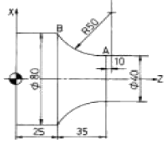
- G02 X80.0 Z25.0 I10.0 K50.0 F0.2;
- G02 U40.0 W-35.0 I48.99 K10.0 F0.2;
- G02 X80.0 W35.0 I48.99 K10.0 F0.2;
- G02 X40.0 Z-35.0 I10.0 K50.0 F0.2;
(정답률: 47%)
65. CNC 선반가공에서 절삭동력이 3 kW이고, 선반의 주축회전 수가 1000 rpm 일때, Ø60 mm의 환봉을 절삭하는 주분력은 몇 N 인가?
- 955
- 544
- 106
- 1060
(정답률: 20%)
66. 그림과 같은 형상을 가공하기 위한 프로그램 중 틀린 부분은?
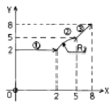
- ① G90 G01 X2. Y2. F100;
- ② G02 X5. Y5. R3. F100;
- ② G03 X5. Y5. R3. F100;
- ③ G01 X8. Y8. F100;
(정답률: 58%)
67. CNC 공작기계에서 전원을 투입한 후 기계운전을 안전하게 하기 위한 첫번째 조작은?
- 프로그램 편집
- 공작물 좌표계 설정
- 원점복귀
- 수동Mode로 주축 회전
(정답률: 80%)
68. CNC기계의 움직임을 전기적인 신호로 표시하는 일종의 회전 피드백(feed back) 장치는?
- 볼 스크루
- 리졸버
- 서보기구
- 컨트롤러
(정답률: 49%)
69. 다음은 CNC선반프로그램이다. N40 블록 가공시 절삭시간은 약 얼마인가?
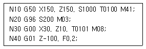
- 30초
- 33초
- 2분 30초
- 2분 45초
(정답률: 38%)
70. CAD시스템에서 이용되는 2차 곡선방정식에 대한 설명으로 올바르지 못한 것은?
- 곡선식에 대한 계산시간이 3차, 4차식보다 적게 걸린다
- 여러개의 곡선을 하나의 곡선으로 연결하는 것이 가능하다.
- 연결된 여러개의 곡선사이의 곡률의 연속이 보장된다.
- 매개변수식으로 표현하는 것이 가능하기도 하다.
(정답률: 32%)
71. 4개의 경계곡선을 선형 보간하여 만들어지는 곡면은?
- 선형 곡면
- 쿤스 곡면
- 퍼거슨 곡면
- 베지어 곡면
(정답률: 64%)
72. CNC공작기계에서 로스트 모션(lost motion)이란?
- CNC장치의 연산부가 잘못 동작해서 테이프 지령과 틀린 동작을 말한다.
- 이송핸들의 휨량을 말한다.
- 위치결정에서 생기는 정방향과 부방향의 정지위치의 오차를 말한다.
- NC공작기계의 볼스크루(ball screw)와 너트(nut)의 간격을 말한다.
(정답률: 34%)
73. 다음 모델링 기법 중 빌딩블럭(building block)개념을이용하여 모델링하는 방식은?
- 와이어프레임(Wire frame) 모델
- CSG(Constructive Solid Geometry) 모델
- B-Rep.(Boundary Representation) 모델
- 서피스(Surface) 모델
(정답률: 49%)
74. CNC의 외부 기억장치를 통하여 프로그램을 내부 기억장치와 입·출력할 때 1분에 전송가능한 최대 비트(bit)수를 무엇이라 하는가?
- 전송속도
- 인터페이스
- 데이터 비트
- 파라메타
(정답률: 40%)
75. 다음 중 CAM에서 정의한 공구경로(CL data)에서 NC콘트롤러에 맞는 NC코드를 생성하는 것을 무엇이라 하는가?
- 테이프 판독기(tape reader)
- 패리티 체크(parity check)
- 포스트 프로세서(post processor)
- 산술 계산기(arithmatic calculation)
(정답률: 80%)
76. 피치에러(Pitch error) 보정이란?
- 볼스크루 피치의 정밀도를 검사하는 기능
- 축의 이동이 한 방향에서 반대 방향으로 이동할 때 발생하는 편차값을 보정하는 기능
- 나사가공의 피치를 정밀하게 보정하는 기능
- 볼스크루의 부분적인 마모 현상으로 발생된 피치간의 편차값을 보정하는 기능
(정답률: 48%)
77. 머시닝센터에서 전원 투입시 자동으로 설정되는 G코드는?
- G04
- G41
- G80
- G92
(정답률: 25%)
78. 곡면을 가공할 때 볼 엔드밀이 지나가고 남은 흔적을 말하며 골간의 간격에 따라서 높이가 달라지게 되는 것은?
- path
- length
- pitch
- cusp
(정답률: 54%)
79. 곡선이나 패치를 구성하기 위해 사용하는 다항식의 최고차수를 degree라 한다. 이때 3×4인 degree의 경우에는 패치를 구성하기 위한 점의 수는?
- 2×3
- 3×4
- 4×5
- 6×8
(정답률: 28%)
80. NC선반에서 지름 49.9(가공치수)부위를 가공 후 측정하였더니 지름 50 이었다. 이 경우 해당공구의 공구 보정값은 얼마로 하여야 하는가? (단, 현보정값 X=10.0, Z=4.0 이다.)
- X=9.9, Z=3.9
- X=9.9, Z=4.0
- X=10.2, Z=3.9
- X=11.1, Z=4.1
(정답률: 54%)
- W (탄화텅스텐): 고강도, 내마모성, 내열성을 높여주는 역할을 한다.
- C (탄소): 경도를 높여주는 역할을 한다.
- Co (코발트): 강도를 높여주는 역할을 한다.
- Cr (크롬): 내부식성을 높여주는 역할을 한다.
- Fe (철): 기본적인 재료로 사용되며, 강도와 내식성을 높여주는 역할을 한다.
따라서, 이 다섯 가지 원소가 조합되어 스텔라이트는 절삭공구재료로 많이 사용되고 있다.